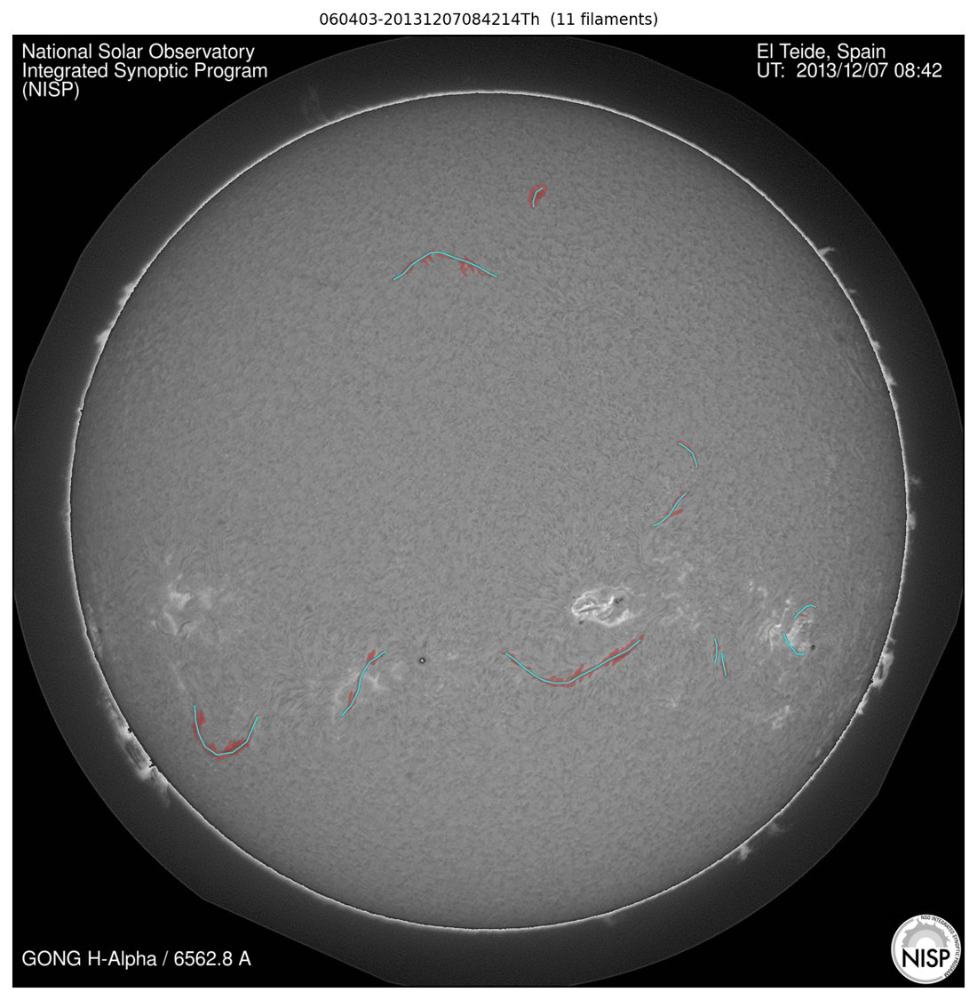
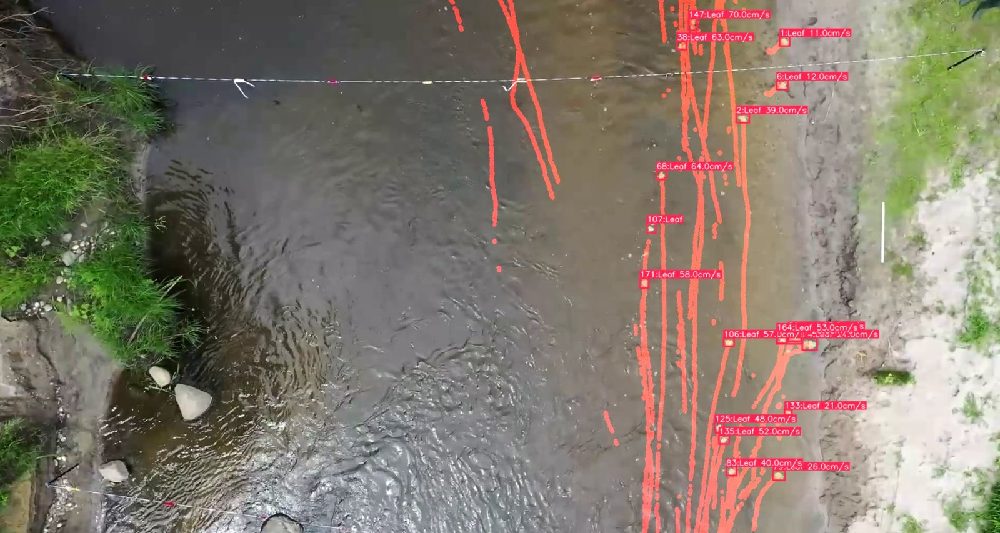
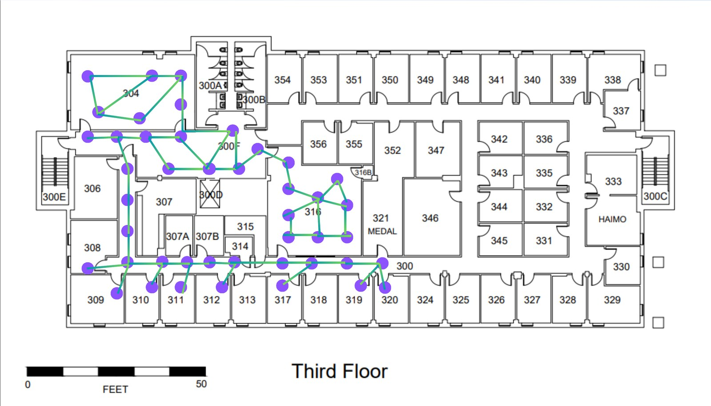

Anh Le
PhD student working on computer vision for scientific imaging. My current work adapts foundation models such as DINOv3 and SAM 2 to solar and seismic data, with an emphasis on fair, reproducible comparisons.

MAGFiLO overlayAbout
I am a PhD student at North Dakota State University. My work sits between computer vision and the sciences: can a foundation model pretrained on everyday photographs be turned into a useful expert on solar or seismic images, and how much of it has to change?
Most of my time goes into controlled benchmarks — every experimental arm differs from its predecessor in exactly one thing, runs across five folds and three seeds, and is scored on two rubrics (pixel/skeleton and object-level) — so that a claim like “LoRA is enough” or “full fine-tuning is worth it” rests on more than a single lucky run.
Along the way I build the infrastructure that makes this honest: reproducible data pipelines, PBS job chains on multi-GPU clusters, and figure generators that put a prediction next to its ground truth for every test image.
Research interests
- Vision foundation models (DINOv3, SAM 2 / SAM 3)
- Parameter-efficient adaptation (LoRA) vs full fine-tuning
- Domain-adaptive pretraining on unlabeled scientific images
- Segmentation of thin curvilinear structures
- Transfer across scientific domains (solar → seismic)
Tools
Projects
Ongoing projects — click a card for key figures and links.

Solar filament segmentation
A hackathon entry that became a controlled benchmark.
Six architectures — U-Net, EdgeAttNet, ConvNeXt, YOLO11-seg, DINOv3, SAM 2 — on 958 GONG full-disk images, one factor changed per arm, 5 folds × 3 seeds. Pretraining bought efficiency, not accuracy: LoRA on SAM 2 matches the best from-scratch model on 7× fewer trained weights. A second stage pretrains that encoder on 100,000 unlabelled disks.

Seismic fault segmentation
Does the filament recipe carry to a domain with different physics?
Frozen, LayerNorm-only, LoRA and fully fine-tuned DINOv3 encoders versus a from-scratch U-Net, trained on synthetic FaultSeg3D volumes and tested on real CRACKS field sections. More adaptation wins on synthetic data and loses on real data; the foundation model pays off when labels are scarce.

Surface-velocity tracking from UAV footage
Graduate research: measuring river flow without putting an instrument in the water.
Segmenting and tracking natural tracers (leaves, foam) in top-down drone video of a river to recover a surface-velocity field, cross-checked against PIV and ADCP/ADV measurements. Feeds a physics-informed network that inverts channel bathymetry from video alone.

YourEyes — indoor navigation by voice
A class project the team wanted to turn into a product.
An iPhone app that walks a blind user to a room by voice. Camera frames plus heading and altitude go to a FastAPI backend, which localises the user with DINOv2 embeddings against a map of anchor photographs and returns the next heading and step count. LiDAR obstacle warnings run on-device.